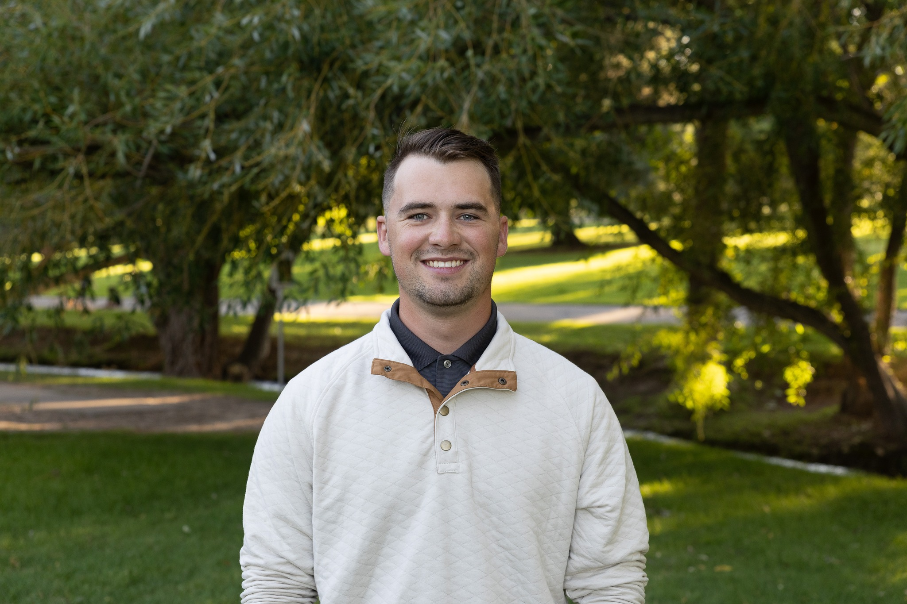

Jared Eldridge | WDD 130
Hello! My name is Jared Eldridge and I am from Idaho Falls, Idaho. I am 23 years old and enjoy spending time with my wife and learning new things. I have a small amount of background in the tech industry and am hoping to use this degree as an oppourtunity to further develope those skills.